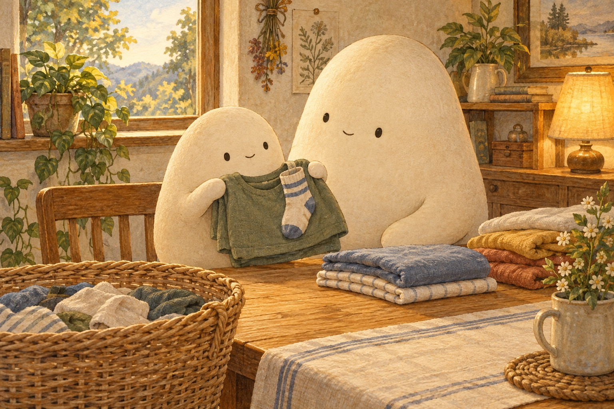

WONDER DAILY GRADE 3 · WRITING
Give the balloon test its words
Electrons · Curiosity day
Name __________________________ Date _______________
Say one clear command, then draw or write it.



Draw a balloon near paper bits. Add an arrow to show what you notice.
rub · hold · near · balloon · paper · electron · charge · cling
First, … tell how to set out the model beads
Then, … tell how to hold the balloon near the paper
Look for, … tell what to notice about a clinging sock
Does your command tell what to do, using a word such as Rub, Hold, or Notice?